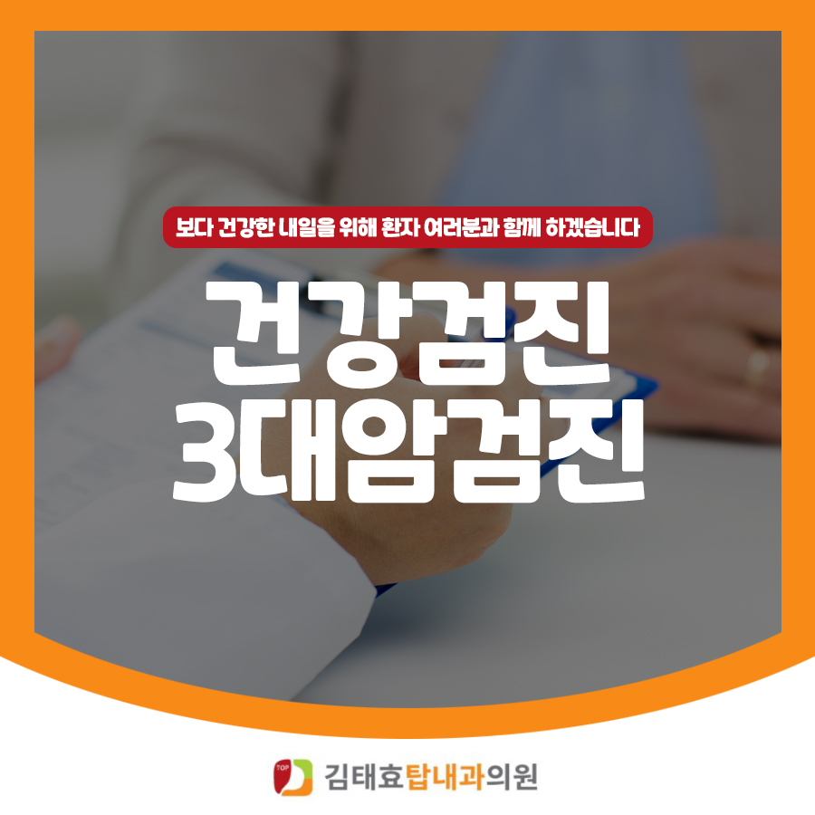
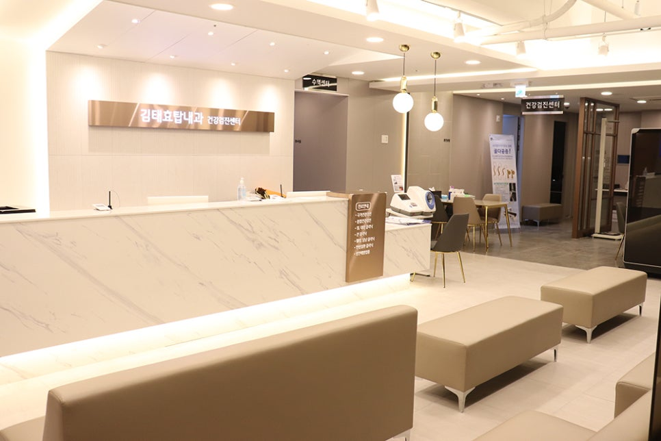

질병을 예방하고 조기에 발견하여 치료하기 위해 정기적인 검진만큼 중요한 것은 없습니다. 특히 국가에서 권장하는 국가건강검진 & 3대암검진은 시기에 맞춰 꼭 받으시길 권장드립니다.

질병을 예방하고 조기에 발견하여 치료하기 위해 정기적인 검진만큼 중요한 것은 없다고 생각됩니다. 특히 국가에서 권장하는 '국가건강검진 & 3대 암검진'의 경우 시기에 맞춰 꼭 받으시길 권장드립니다.
진주 평거동에 위치한 김태효탑내과의원에서는 편안한 공간에서 신뢰를 바탕으로 한 검진을 받으실 수 있으니, 건강검진이 필요한 분들은 예약 후 편하게 내원해 주시기 바랍니다.
국가건강검진은 국민이 건강한 삶을 영위할 수 있도록 공단에서 비용을 부담하여 진행됩니다. 1차 검진 및 1차 검진 이상자를 대상으로 2차 검진이 실시됩니다.
| 구분 | 1차 건강검진 | 2차 건강검진 | 생애전환기검진 |
|---|---|---|---|
| 대상 | 건강검진 대상자 전체 | 1차 검진 이상 소견자 | 만 40세, 만 66세 |
| 검사항목 | 진찰 및 상담, 흉부방사선촬영, 혈액검사, 요검사 등 23개 항목 | 고혈압, 당뇨, 인지기능 등 3개 질환 6항목 | 진찰 및 상담, 흉부방사선촬영, 혈액검사, 요검사, 감염검사, 골밀도, 신체기능검사 등 |
국민건강보험공단지정 3대 암검진은 위암·대장암·간암입니다.
만 40세 이상 남녀. 증상이 없어도 2년마다 검진 대상이 됩니다.
검사종류위장조영검사 또는 위내시경검사 중 선택. 위장조영검사 후 암이 의심되면 위내시경을, 위내시경 유소견 시 조직검사를 시행합니다.
만 50세 이상 남녀. 증상이 없어도 1년마다 검진 대상이 됩니다.
검사종류분변잠혈검사를 기본으로 하며, 유소견 시 대장이중조영검사 또는 대장내시경을 실시합니다. 대장내시경 유소견 시 조직검사를 시행합니다.
만 40세 이상 남녀 중 간암 발생 고위험군(B형 간염항원 양성, C형 간염항체 양성, 간경변증, B형·C형 간염 바이러스에 의한 만성 간질환 환자)
검사종류간초음파 검사와 혈청 알파태아단백 검사를 병행합니다.
